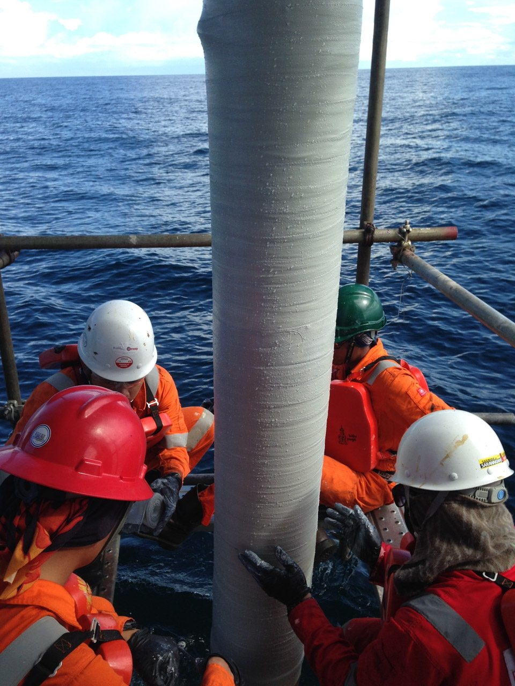
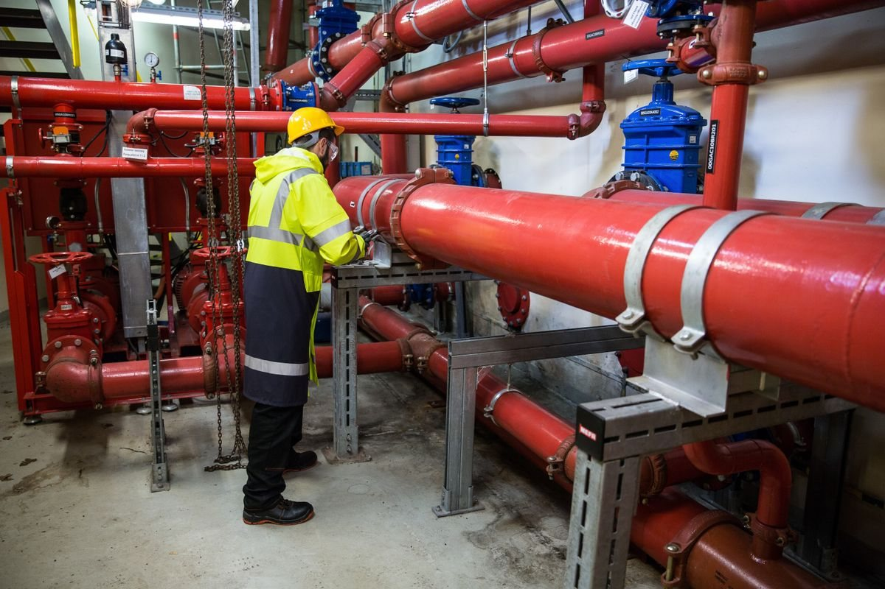

Corrosion Mitigation Services is the authorized South Africa & Namibia distributor of CSNRI composite pipe repair and corrosion-protection systems, backed by Critica Infrastructure engineering and decades of proven field performance.
Request A Quote
Corrosion Mitigation Services brings globally proven composite repair technology to South Africa and Namibia. As the authorized regional distributor of CSNRI's composite systems — part of Critica Infrastructure, a Henkel company — we supply and support the same engineered solutions trusted by pipeline operators, refineries and utilities on six continents.
From emergency leak containment to permanent structural rehabilitation, our systems are backed by decades of independent testing and a design life measured in decades, not years.
A focused range of CSNRI composite technologies for pipeline, plant and infrastructure repair — supplied and supported locally across South Africa & Namibia, from product selection through to on-site installation training.
A pretensioned composite repair sleeve for high-pressure transmission pipelines, combining a unidirectional e-glass coil with a high-modulus filler and structural adhesive.
A highly engineered carbon fibre composite solution for the permanent repair and rehabilitation of pipelines and piping structures affected by common and complex anomalies.
A pre-saturated, bi-directional fibreglass composite for repairing and reinforcing internal and external corrosion on piping systems and structures with complex geometry.
A field-saturated carbon fibre repair system applied with two-part epoxy, functioning as both a pressure-containing leak seal and a structural reinforcement.
A field-saturated fibreglass repair system used across plants, refineries, tank farms, terminals and offshore assets for pressure-containing and reinforcing repairs.
A durable, easy-to-apply fibreglass tape system protecting pipes against corrosion, abrasion and impact — suitable for underwater application on PVC and metal pipe.

We review your pipe or asset condition, pressure rating, and operating environment.
Our team matches the right composite system to your specific repair requirement.
Installation is carried out or supported to manufacturer-specified procedures.
Completed repairs are inspected and documented before hand-back to service.
Tell us about your pipeline, plant or infrastructure repair requirement and our team will respond with a technical recommendation. Prefer more detail first? Visit the full contact page →